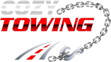
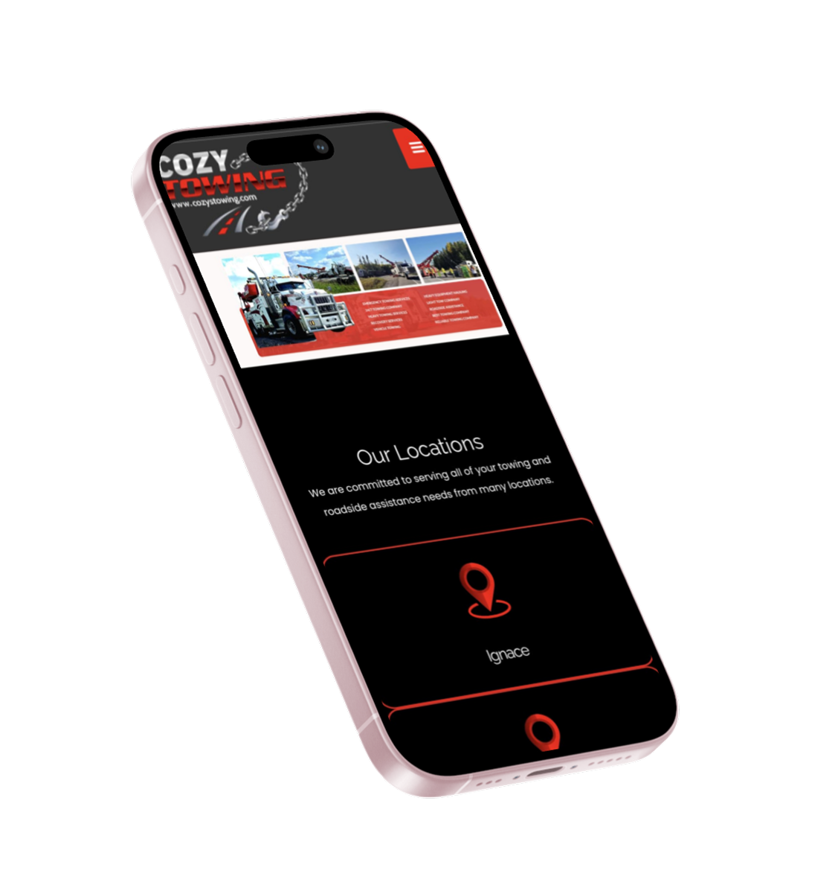
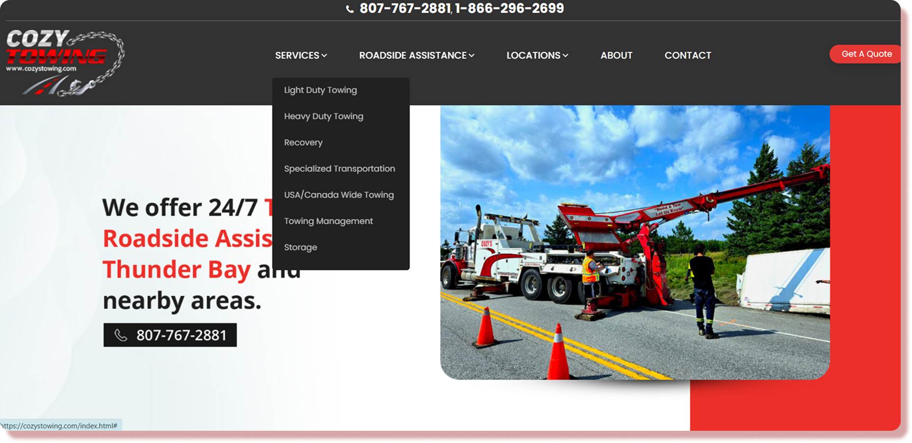
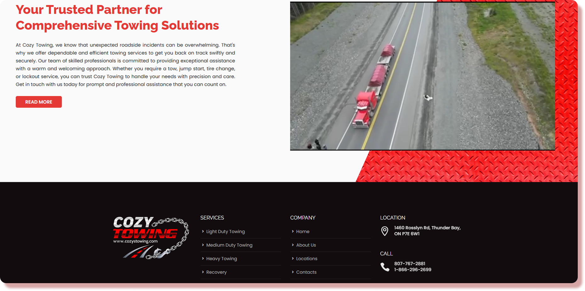
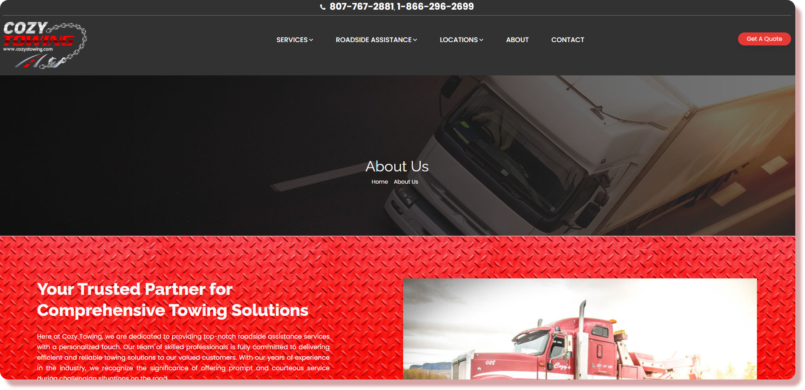

Web Design & Development Case Study
Cozy Towing
Professional towing and storage solutions website with comprehensive roadside assistance and fleet management services.

Project Overview
The Service
Cozy Towing provides comprehensive towing and roadside assistance solutions. Services include light-duty and heavy-duty towing, recovery services, specialized transportation, USA/Canada-wide towing, towing management, and secure vehicle storage. Operating 24/7, Cozy Towing is a trusted partner for both individual drivers and business fleet operations.
The Problem
Customers needed a user-friendly platform to understand diverse towing and storage services, locate facilities across multiple regions, request quotes, and access 24/7 roadside assistance information. The challenge was creating an intuitive, professional website that builds trust with customers while effectively showcasing specialized services and making contact/booking seamless across devices.
The Solution
Designed and developed a modern, responsive website highlighting all towing services, location details, and 24/7 availability. The site features clear service categorization, prominent contact information, an intuitive quote request system, and mobile-first responsive design. Strategic UX design emphasizes trust and accessibility, enabling customers to quickly find services and contact Cozy Towing from any device.
The Core Problem
Drivers and business operators in Northern Ontario face critical challenges accessing reliable towing services. Existing towing company websites lack mobile optimization, fail to clearly communicate service scope, and provide no transparent way to request quotes or compare pricing. The absence of centralized, user-friendly digital infrastructure creates confusion, delays response times, and forces customers to rely on phone calls — especially critical during emergencies when decision-making must be fast and informed.
🚗 Customer Pain
No clear way to understand service options, pricing, or availability without making phone calls during stressful emergencies
🏢 Business Pain
Manual call handling creates operational bottlenecks and leads to missed quote requests and potential lost revenue
🌐 Market Gap
No professional digital presence in regional towing market; competitors lack mobile-optimized, modern web experiences
How Might We
- How might we make towing service information instantly accessible and understandable for customers in emergency situations?
- How might we build trust and credibility through professional design and transparent service communication?
- How might we streamline the quote request process so customers can get information without lengthy phone calls?
- How might we ensure the website works flawlessly across all devices, especially mobile phones used during roadside emergencies?
Design Process
- Customer interviews
- User research
- Competitor analysis
- Industry insights
- User personas
- User journey map
- Problem framing
- HMW questions
- Service structure
- Navigation design
- Information architecture
- CTA strategy
- Wireframing
- Mockups
- High-fidelity designs
- Design system
- Usability testing
- Responsive testing
- Client feedback
- Launch optimization
Research Insights
-
Emergency Context Matters
Customers in towing emergencies need fast, clear answers — they won't spend time navigating complex websites. Design must prioritize immediate access to critical information: phone, hours, service types.
-
Mobile-First is Essential
Most customers access towing services on mobile while stranded. Website must load fast, be touch-friendly, and provide one-click contact options (call, quote, directions).
-
Trust Through Professionalism
Professional design, clear service descriptions, and customer testimonials significantly influence service choice. Towing is high-stakes; design must convey reliability and expertise.
-
Transparent Communication
Customers want upfront information on service costs, coverage areas, and response times. Lack of clarity drives them to competitors. Website must address common questions proactively.
Competitor Analysis
Sites
Competitors
Chains
High-Fidelity Design
Final UI screens showcasing the complete visual design system and user experience.




Design System & Brand
Visual Design
Professional color palette (trust-focused blues/grays), clear typography, roadside-friendly icons, responsive grid system
Tools Used
Figma, Adobe XD, responsive design frameworks, SEO optimization tools
Deliverables
Design system, interactive prototypes, mobile-first design specs, performance optimization report
Key Results & Impact
Mobile-friendly design score
Reduction in quote request calls
Average customer satisfaction rating
Increase in online service requests
Tools & Technologies
Design
Figma, Adobe XD, Responsive Design Principles
Development
HTML5, CSS3, JavaScript, Responsive Web Design
Optimization
Performance Optimization, SEO Best Practices, Mobile-First Approach
My Contribution
Research & UX Strategy
- Researched towing industry best practices and competitor websites
- Analyzed user needs for service discovery and contact accessibility
- Developed information architecture for clear service categorization
- Created user journey mapping for quote requests and service inquiries
UI/UX Design
- Designed professional, trust-building interface aligned with brand identity
- Created wireframes and high-fidelity mockups in Figma
- Developed responsive design system for mobile, tablet, and desktop
- Implemented clear call-to-actions for service requests and contact options
Frontend Development
- Built responsive, high-performance website using HTML5 and CSS3
- Implemented mobile-first design ensuring optimal UX across all devices
- Integrated quote request system and contact forms
- Optimized performance, loading speed, and SEO for better visibility